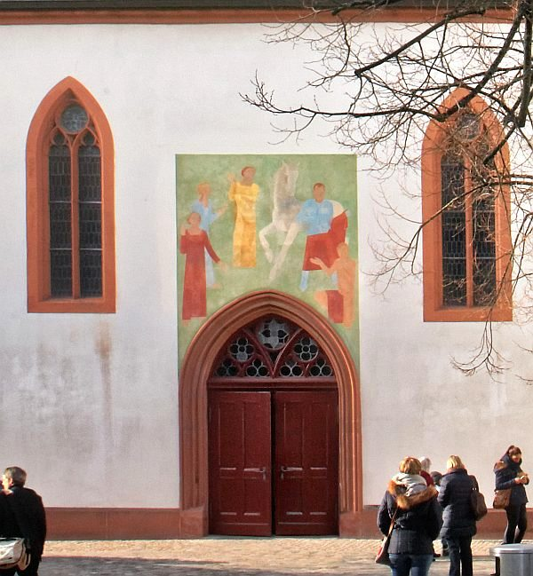

An vielen Orten in der Schweiz stehen Martinskirchen. Der Name sagt noch nichts über die Konfession der Gottesdienst feiernden Gemeinde. Nach der Reformation wurden etliche Martinskirchen fortgeführt. Martin von Tours war Luthers Namenspatron. Wichtiger aber war, dass Martin zum alle Konfessionen übersteigenden Urbild christlicher Nächstenliebe geworden war.
Martin von Tours
Martin von Tours wurde um 316 (oder 336) in Sabaria, dem heutigen Szombathely (Ungarn), als Kind heidnischer Eltern geboren, wuchs in Pavia auf und schlug mit 15 Jahren wie sein Vater die Militärlaufbahn ein. Der Überlieferung nach teilte er seinen Soldatenmantel mit einem Bettler in Amiens; nachts erschien ihm Christus im Traum als Bettler. Mit 18 Jahren liess Martin sich taufen, trat später aus dem römischen Heer aus und fand in Bischof Hilarius von Poitiers, einem der bedeutendsten Theologen seiner Zeit, seinen geistlichen Lehrer. 361 gründete Martin das erste Kloster Galliens in Ligugé. In Sulpicius Severus fand Martin schon zu Lebzeiten einen Biografen, der ihn als Gottesmann in radikaler Christusnachfolge, Missionar und Wundertäter typisierte und damit die Gattung christlicher Heiligenviten prägte. 371 wählte das Kirchenvolk von Tours ihn gegen seinen Willen zum Bischof – laut Sulpicius hatte er sich in einem Stall versteckt, wurde aber von Gänsen «verschnattert». Die gallischen Bischöfe lehnten den ärmlich gekleideten Asketen ab; er verkörperte ein anderes Bischofsideal als das des Reichsbischofs, der sich mit der Anerkennung des Christentums durchsetzen sollte. Martin starb am 8. November 397 in Candes, am 11. November wurde er in Tours begraben. Seine Verehrung – insbesondere als Heiler – wurde durch weitere Schriften über ihn stark gefördert, Zentrum war ab dem 5. Jahrhundert die Martinsbasilika in Tours.
Ausbreitung des Martinkults
Auch ausserhalb des Frankenreichs und Galliens wurde Martin früh verehrt. Vom 6. bis 9. Jahrhundert war Martin – als Bekenner des rechten Glaubens – Patron der Kirche San Apollinare Nuovo im damals byzantinischen Ravenna; hier findet sich die älteste erhaltene Abbildung von ihm. Mit dem Aufstieg der Merowinger gewann die Martinsverehrung eine neue Dimension. Königin Clothilde (gest. 544) zog nach dem Tode ihres Mannes Chlodwig nach Tours, um ihr Leben im Dienst des Heiligen zu verbringen. Die merowingische Prinzessin Bertha veranlasste nach ihrer Heirat mit dem König von Kent den Bau einer Martinskirche in Canterbury. Im 7. Jahrhundert kam der geteilte weisse Mantel in den Besitz des Königshauses; die Reliquie zählte fortan zu den Reichskleinodien. Der Mantel wurde in Schlachten mitgetragen, die Soldaten sollten dadurch zum Sieg angespornt, die Feinde abgeschreckt werden. Der Martinskult breitete sich auf Gebiete aus, die – wie etwa Rätien (Graubünden) – seit dem 6. Jahrhundert unter merowingischen bzw. karolingischen Einfluss kamen. Auch der Benediktinerorden trug zur Verbreitung der Verehrung bei.
Fresko von Hans Rohner über dem Eingang zur Martinskirche in Basel. (Bild: Maria Lissek)
Wandlungen der Erinnerungspolitik
Vom wundertätigen Mönchsbischof eines Sulpi cius Severus über den rechtgläubigen Bekenner und den militarisierten Martin der Merowinger wurde Martin ab dem 12.Jahrhundert zum sozialen Heiligen und zum Sinnbild der christlichen Nächstenliebe. Die Mantelspende ist die am häufigsten dargestellte Episode eines Heiligen überhaupt. Derartige Abbildungen, meist aktualisierend in zeitgenössischem Alltagsleben dargestellt, appellierten an die Betrachtenden, Bedürftigen zu helfen und damit soziale Praxis zu verändern.
Der Mantelstoff wurde dabei selbst zum vermittelnden Akteur, zur Gabe, die zwischen gesellschaftlichem Aus und Einschluss des Bettlers, aber auch zwischen Himmel und Erde vermittelt – vor allem, wenn der Traum Martins und der thronende Christuseinbezogen werden. In jüngster Zeit rückt erneut der pazifistische Martin in den Vordergrund, während der Bettler auch für Arbeitslose, Drogensüchtige, Flüchtlinge stehen kann. Ein vielfältiges Volksbrauchtum (Martinsumzüge, Laternen, Martinsgänse...), oft gestützt auf Legenden, hält die Erinnerung an Martin auch in säkularen Gesellschaften lebendig.
Martinskirchen in der Schweiz
Viele Martinskirchen in der Schweiz gehen aufs Frühmittelalter und die Anfänge der Christianisierung zurück und lagen auf merowingisch / karolingischem Einflussgebiet. So etwa die (reformierte) Martinskirche in Basel, heute Konzertsaal, die als ältestes Gotteshaus der Stadt gilt. Oekolampad trieb von hier aus die Reformation voran; 1872 erhielt die christkatholische Bewegung dort entscheidende Impulse. 1921 wurde über dem Portal am Martinskirchplatz ein Fresko von Hans Rohner mit der Mantelspende angebracht. Im Kanton Aargau liegen die (christkatholischen) Martinskirchen von Magden und ihre Tochtergründung Rheinfelden. Martin ist Oltens Stadtpatron und im Stadtwappen zu finden; die (christkatholische) Stadtkirche und die 1908 bis 1910 erbaute (römischkatholische) Kirche tragen sein Patrozinium. In Graubünden gibt es relativ viele Martinskirchen, die grösste ist die (reformierte) spätgotische Martinskirche in Chur. St. Martin in Zillis (reformiert) besitzt eine romanische Holzkassettendecke mit einem Bilderzyklus zu Martins Leben. Martins Spuren sind an vielen Orten zu entdecken – sie schaffen Verbindungslinien zwischen Ost und West, Arm und Reich, Gestern und Heute.
Dr. Angela Berlis ist Professorin für Geschichte des Altkatholizismus und Allgemeine Kirchengeschichte am Institut für Christkatholische Theologie an der Universität Bern.
Weitere Artikel von {{ author.author }} finden Sie hier:
Zur Vertiefung:
- Themenschwerpunkt Martin von Tours: Rottenburger Jahrbuch für Kirchengeschichte 18 (1999).
- Sennhauser, Hans Rudolf (Hg.): Frühe Kirchen im östlichen Alpengebiet, 2 Bde., München 2003.